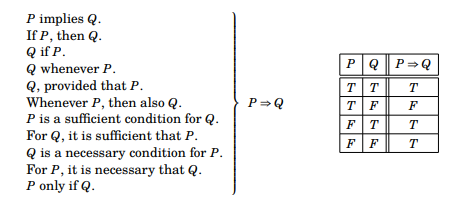

2.3 Conditional Statements¶
There is yet another way to combine two statements. Suppose we have in mind a specific integer \(a\). Consider the following statement about \(a\).
\(R\) : If the integer \(a\) is a multiple of 6, then \(a\) is divisible by 2.
We immediately spot this as a true statement based on our knowledge of integers and the meanings of the words “if” and “then.” If integer \(a\) is a multiple of 6, then \(a\) is even, so therefore \(a\) is divisible by 2. Notice that \(R\) is built up from two simpler statements:
\(P\) : The integer \(a\) is a multiple of 6.
\(Q\) : The integer \(a\) is divisible by 2.
\(R\) : If \(P\), then \(Q\).
In general, given any two statements \(P\) and \(Q\) whatsoever, we can form the new statement “if \(P\), then \(Q\).” This is written symbolically as \(P \Rightarrow Q\) which we read as “If \(P\), then \(Q\),” or “\(P\) implies \(Q\). ” Like \(\wedge\) and \(\lor\), the symbol \(\Rightarrow\) has a very specific meaning. When we assert that the statement \(P \Rightarrow Q\) is true, we mean that if \(P\) is true, then \(Q\) must also be true. (In other words we mean that the condition \(P\) being true forces \(Q\) to be true.) A statement of form \(P \Rightarrow Q\) is called a conditional statement because it means \(Q\) will be true under the condition that \(P\) is true.
Think of \(P \Rightarrow Q\) as a promise that whenever \(P\) is true, \(Q\) will also be true. There is only one way this promise can be broken (i.e., be false), namely if \(P\) is true but \(Q\) is false. So the truth table for the promise \(P \Rightarrow Q\) is as follows:
| P | Q | P ⇒ Q |
|---|---|---|
| T | T | T |
| T | F | F |
| F | T | T |
| F | F | T |
Perhaps you are bothered by how \(P \Rightarrow Q\) is true in the last two lines. Here is an example to explain it. Suppose your professor makes this promise:
If you pass the final exam, then you will pass the course.
Your professor is making the promise
(You pass the exam) \(\Rightarrow\) (You pass the course).
Under what circumstances did she lie? There are four possible scenarios, depending on whether or not you passed the exam and whether or not you passed the course. These scenarios are tallied in the following table.
| You pass exam | You pass course | (You pass exam) ⇒ (You pass course) |
|---|---|---|
| T | T | T |
| T | F | F |
| F | T | T |
| F | F | T |
The first row is the scenario in which you pass the exam and you pass the course. Clearly the professor kept her promise, so the \(T\) in the third column indicates that she told the truth. In the second row, you passed the exam but failed the course. In this case your professor broke her promise, and the \(F\) in the third column indicates that what she said was untrue. The third row describes the scenario in which you failed the exam but still passed the course. How could that happen? Maybe your professor felt sorry for you. But that doesn’t make her a liar. Her only promise was that if you passed the exam then you would pass the course. She did not say passing the exam was the only way to pass the course. Since she didn’t lie, then she told the truth, so there is a \(T\) in the third column. Finally look at the fourth row: you failed the exam and failed the course. Your professor certainly did not lie to you. Hence the \(T\) in the third column.
For another example, consider this statement:
If this month is September, then there is an equinox this month.
An equinox is a day for which there are equal hours of darkness and light. There are two equinoxes per year, one in September and the other in March. The above statement is thus unquestionably true, for it asserts correctly that if the current month is September, then an equinox will occur this month. In symbolic form, our statement is
(This month is September) \(\Rightarrow\) (There is an equinox this month).
This statement is true, but the open sentences \(P\): “This month is September,” and \(Q\): “There is an equinox this month,” are either true or false, depending on what month it is. But \(P \Rightarrow Q\) is always true. This is shown below for three (out of 12) months. Notice how \(P \Rightarrow Q\) is true, even when \(P\) is false.
| This month is September | There is an equinox this month | (This month is September) ⇒ (There is an equinox this month) | |
|---|---|---|---|
| Sept. | T | T | T |
| March | F | T | T |
| May | F | F | T |
As \(P \Rightarrow Q\) is a true statement in this particular example, there is no month with \(P\) true and \(Q\) false. (Unless we imagine that Earth is destroyed by an asteroid before September 21, a possibility that we shall not entertain.)
In mathematics, whenever we encounter the construction “If \(P\), then \(Q\),” it means exactly what the truth table for \(\Rightarrow\) expresses. Of course there are other grammatical constructions that also mean \(P \Rightarrow Q\). Here is a summary of the main ones. The meaning of each is encapsulated by the table for \(\Rightarrow\).
\(P\) implies \(Q\).
If \(P\), then \(Q\).
\(Q\) if \(P\).
\(Q\) whenever \(P\)
\(Q\), provided that \(P\).
Whenever \(P\), then also \(Q\).
\(P\) is a sufficient condition for \(Q\).
For \(Q\), it is sufficient that \(P\).
\(Q\) is a necessary condition for \(P\).
For \(P\), it is necessary that \(Q\).
\(P\) only if \(Q\).
{kind=link}

These can all be used in the place of (and mean exactly the same thing as) “If \(P\), then \(Q\).” You should analyze the meaning of each one and convince yourself that it captures the meaning of \(P \Rightarrow Q\). For example, \(P \Rightarrow Q\) means the condition of \(P\) being true is enough (i.e., sufficient) to make \(Q\) true; hence “\(P\) is a sufficient condition for \(Q\).”
The wording can be tricky. An everyday situation may help clarify it. For example, consider your professor’s promise:
(You pass the exam) \(\Rightarrow\) (You pass the course).
This means that you passing the exam is a sufficient (though perhaps not necessary) condition for you passing the course. Thus your professor might just as well have phrased her promise in one of the following ways.
Passing the exam is a sufficient condition for passing the course.
For you to pass the course, it is sufficient that you pass the exam.
However, when we want to say “If \(P\), then \(Q\)” in everyday conversation, we do not normally express this as “\(Q\) is a necessary condition for \(P\)” or “\(P\) only if \(Q\).” But such constructions are not uncommon in mathematics. To understand why they make sense, notice that \(P \Rightarrow Q\) being true means that it’s impossible that \(P\) is true but \(Q\) is false, so in order for \(P\) to be true it is necessary that \(Q\) is true; hence “\(Q\) is a necessary condition for \(P\).” And this means that \(P\) can only be true if \(Q\) is true, i.e., “\(P\) only if \(Q\).”
Exercises for Section 2.3¶
Without changing their meanings, convert each of the following sentences into a sentence having the form “If \(P\), then \(Q\).”
A matrix is invertible provided that its determinant is not zero.
Answer
\(P\) : The determinant of a matrix is not equal to zero. \(Q\) : The matrix is invertible. Determinant \(\neq 0\) \(\Rightarrow\) invertible. If a matrix has a determinant not equal to zero, then the matrix is invertible.
For a matrix to be invertible, it is sufficient that its determinant is not equal to zero. The determinant being not equal to zero is enough to guarantee that a matrix is invertible.
For the determinant to be not equal to zero, it is necessary that the matrix is invertible. It is impossible for the determinant to be not equal to zero, while the matrix is not invertible. The determinant of a matrix being not equal to zero, can only be true if the matrix is invertible.
For a function to be continuous, it is sufficient that it is differentiable.
Answer
\(P\) : The function is differentiable. \(Q\) : The function is continuous. Differentiable \(\Rightarrow\) continuous. If the function is differentiable, then the function is continuous.
The function being differentiable is enough to guarantee that the function is continuous.
For the function to be differentiable, it is necessary that the function is continuous. It is impossible for the function to be differentiable while the function is not continuous. The function being differentiable, can only be true if the function is continuous.
For a function to be continuous, it is necessary that it is integrable.
Answer
\(P\) : The function is continuous. \(Q\) : The function is integrable. Continuous \(\Rightarrow\) integrable. If the function is continuous, then it is integrable.
For a function to be integrable, it is sufficient that the function is continuous. The function being continuous is enough to guarantee that the function is integrable.
For a function to be continuous, it is necessary that the function is integrable. It is impossible for the function to be continuous, while the function is not integrable. The function being continuous, can only be true if it is integrable.
A function is rational if it is a polynomial.
Answer
\(P\) : The function is a polynomial. \(Q\) : The function is rational. Polynomial \(\Rightarrow\) rational. If a function is a polynomial, then it is rational.
For a function to be rational, it is sufficient that it is a polynomial. A function being a polynomial is enough for it to be rational.
For a function to be a polynomial, it is necessary that it is rational. It is impossible for a function to be a polynomial, while the function is not rational. A function being a polynomial, can only be true if it is rational.
An integer is divisible by 8 only if it is divisible by 4.
Answer
\(P\) : An integer is divisible by 8. \(Q\) : An integer is divisible by 4. Divible by 8 \(\Rightarrow\) divisible by 4. If an integer is divisible by 8, then it is divisible by 4.
For an integer to be divisible by 4, it is suffcient for it to be divisible by 8. An integer being divisible by 8 is enough for it to also be divisible by 4.
For an integer to be divisible by 8, it is necessary that it is divisible by 4. It is impossible for an integer to be divisible by 8, if it is not divisible by 4 first. An integer can be divisible by 8 only if it is divisible by 4.
Whenever a surface has only one side, it is non-orientable.
Answer
\(P\) : A surface has only one side. \(Q\) : A surface is non-orientable. Only one side \(\Rightarrow\) non-orientable. If a surface only has one side, then it is non-orientable.
For a surface to be non-orientable, it is sufficient that it only has one side. A surface having only one side is enough for it to be non-orientable.
For a surface to have only one side, it is necessary that it is non-orientable. It is impossible for a surface to have only one side, if it is orientable. A surface has one side only if it is non-orientable.
A series converges whenever it converges absolutely.
Answer
\(P\) : A series converges absolutely. \(Q\) : A series converges. Converges absolutely \(\Rightarrow\) converges. If a series converges absolutely, then it converges.
For a series to converge, it is sufficient that it converges absolutely. A series converging absolutely is enough for it to converge.
For a series to converge absolutely, it is necessary that it converges. It is impossible for a series to converge absolutely, if it does not converge first. A series converges absolutely only if it converges.
A geometric series with ratio \(r\) converges if \(| r | < 1\).
Answer
\(P\) : A geometric series has ratio \(r\) with \(|r|<1\). \(Q\) : A geometric series converges. \(|r|<1\) \(\Rightarrow\) converges If a geometric series with ratio \(r\) has \(|r|<1\), then it converges.
For a geometric series to converge, it is sufficient that \(|r|<1\). The ratio of a geometric series being \(|r|<1\), is enough for it to converge.
For the ratio of a geometric series to have \(|r|<1\), it is necessary that it converges. It is impossible for the ratio of a geometric series to have \(|r|<1\), if it does not converge. The ratio of a geometric series has \(|r|<1\), only if it converges.
A function is integrable provided the function is continuous.
Answer
\(P\) : The function is continuous. \(Q\) : The function is integrable. Continuous \(\Rightarrow\) integrable. If the function is continuous, then it is integrable.
For a function to be integrable, it is sufficient that it is continuous. A function being continuous is enough for it to be integrable.
For a function to be continuous, it is necessary that it is integrable. It is impossible for a function to be continuous, while it is not integrable. A function is continuous only if it is integrable.
The discriminant is negative only if the quadratic equation has no real solutions.
Answer
\(P\) : The discriminant of the quadratic equation is negative. \(Q\) : The quadratic equation has no real solutions. Negative discriminant \(\Rightarrow\) no real solutions. If the discriminant is negative, then the quadratic equation has no real solutions.
For the quadratic equation to have no real solutions, it is sufficient that the discriminant is negative. The discriminant being negative is enough for the quadratic equation to have no real solutions.
For the discriminant to be negative, it is necessary that the quadratic equation has no real solutions. It is impossible for the discriminant to be negative, while the quadratic equation has real solutions. The discriminant is negative, only if the quadratic equation has no real solutions.
You fail only if you stop writing. (Ray Bradbury)
Answer
\(P\) : You fail. \(Q\) : You stop writing. Fail \(\Rightarrow\) stop writing. If you fail, then you have stopped writing.
For you to stop writing, it is sufficient that you fail. Failing is enough for you to stop writing.
For you to fail, it is necessary that you stop writing. It is impossible to fail, while you have not stopped writing. You fail only if you stop writing.
People will generally accept facts as truth only if the facts agree with what they already believe. (Andy Rooney)
Answer
\(P\) : People will generally accept facts as truth. \(Q\) : The facts agree with what people already believe. Accept facts as truth \(\Rightarrow\) facts agree with beliefs. If people generally accept facts as truth, then the facts agree with what people already believe.
For the facts to agree with what people already believed, it is sufficient that people accept the facts as truth. Accepting the facts as truth is enough for the facts to agree with what people already believed.
For people to generally accept the facts as truth, it is necessary that the facts agree with what they already believed. It is impossible for people to generally accept the facts as truth, while the facts do not agree with what they already believe. People will generally accept facts as truth, only if the facts agree with what they already believe.
Whenever people agree with me I feel I must be wrong. (Oscar Wilde)
Answer
\(P\) : People agree with me. \(Q\) : I feel I must be wrong. People agree \(\Rightarrow\) I must be wrong. If people agree with me, then I feel I must be wrong.
For me to feel I must be wrong, it is sufficient that people agree with me. People agreeing with me is enough for me to feel I must be wrong.
For people to agree with me, it is necessary that I feel I must be wrong. It is impossible for people to agree with me, while I do not feel I must be wrong. People agree with me only if I feel I must be wrong.